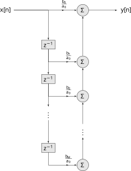
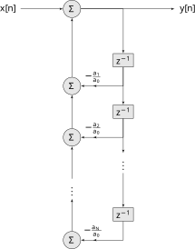
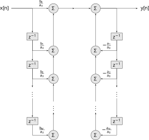
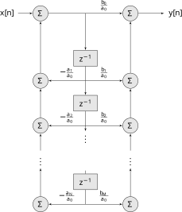
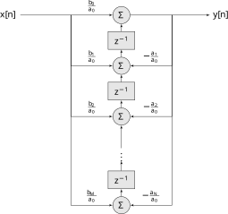
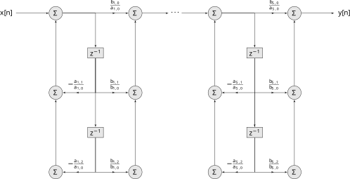

Lecture 23
Implementing DT Filters
2026-04-21
Introduction
Given an transfer function \(H(z)\) that corresponds to a filter, how do we implement a computational system that performs the filtering of an arbitrary input signal? Broadly, there are two approaches:
frequency domain implementation of FIR filters using FFT (covered in depth in 4624);
time domain implementation of FIR or IIR filters using variations on a recursive LCCDE (covered in depth in 4624).
Frequency Domain Implementations
Recall from ECE 2714, given a finite-length sequence of real or complex numbers \(x[n]\), indexed from \(0\) to \(N-1\), the Discrete Fourier Transform or DFT is given by, \[X[k] = \sum_{n = 0}^{N-1} x[n] e^{-j \frac{2\pi}{N}k n}\] and corresponds to the DT Fourier transform of a finite length signal. It has a fast implementing (several actually) called the Fast Fourier Transform or FFT.
Consider a finite impulse response (FIR) filter whose impulse response is \[h[n] = \sum\limits_{m = 0}^{M-1} a_m\, \delta[n-m]\] and whose corresponding transfer function is \[H(z) = \sum\limits_{m = 0}^{M-1} a_m\, z^{-m} \; .\] Since all FIR systems (with finite coefficients) are stable, the system also has a frequency response \[H\left(e^{j\omega}\right) = \sum\limits_{m = 0}^{M-1} a_m\, e^{-j\omega m} \; .\] Define the frequency M-point sampled version of the frequency response as \[H_M[k] = \left. H\left(e^{j\omega}\right) \right|_{\omega = \frac{2\pi k}{M}} = \sum\limits_{m = 0}^{M-1} a_m\, e^{-j\frac{2\pi k m}{M}} \; .\] This is the M-point DFT of \(h[n]\) and can be precomputed.
Now, suppose \(X_M[k]\) is the \(M\)-point DFT of a finite-length input signal. Then \[Y_M[k] = H_M[k]\cdot X_M[k]\] is the DFT of the corresponding finite-length output. Taking the inverse DFT gives us the finite-length sequence that corresponds to a time domain output \(y_M[k]\). This gives us an approach to implement FIR filters given a finite-length input of same length \(M\).
Some issues:
What do we do if the lengths of the input and filter impulse response are not the same?
A related issue is, when is \(y_M[k]\) the same as convolution of the FIR filter with the input?
Can we implement at filter in real-time this way? In what sense?
What if the input is not finite length, or more realistically, is too long to fit into memory?
What is the effect of quantization of values and finite-bit arithmetic?
What do we do if the system does not have floating point hardware?
These are all addressed in ECE 4624. However the first two can be easily resolved. Consider an FIR filter with impulse response
\[h[n] = \sum\limits_{m = 0}^{N-1} a_m\delta[m-m]\] with the \(N\) non-zero samples denoted \(h_N[n]\).
\[h[n] = \left\{ \begin{array}{cc} h_N[n] & 0 \leq n < N\\ 0 & \text{else} \end{array}\right.\]
Further consider an input \(x[n]\) so that
\[y[n] = h[n] * x[n] \stackrel{\mathcal{F}}{\longleftrightarrow} H\left(e^{j\omega}\right)\cdot X\left(e^{j\omega}\right)\]
Suppose the input is of finite length, i.e
\[x[n] = \left\{ \begin{array}{cc} x_N[n] & 0 \leq n < N\\ 0 & \text{else} \end{array}\right.\] Then define the finite length signal \[y_N[n] = \operatorname{IDFT}\left\{H_N[k]\cdot X_N[k]\right\}\]
Is this the output of the system \[y[n] = \left\{ \begin{array}{cc} y_N[n] & 0 \leq n < N\\ 0 & \text{else} \end{array}\right. \quad ?\]
No. To see this consider the definition of circular convolution that is consistent with \(\operatorname{IDFT}\left\{H_N[k]\cdot X_N[k]\right\}\)
\[y_N[n] = \sum\limits_{m=0}^{N-1} x_N[m]\cdot h_N[(n-m) \% N] \equiv x_N[n] \underset{N}{\circledast} h_N[n]\]
where the signed modulus operator is defined as
\[n \% N = \operatorname{remainder} \frac{|n|}{N}\]
So in general \(x_N[n] \underset{N}{\circledast} h_N[n] \neq x[n] \ast h[n]\). This makes sense given that circular convolution in essence assumes a periodic extension of the input and output signals via the index modulus operation, while regular convolution includes the effect of the finite=length signal turning on and off (transient responses).
To make them equivalent can define the zero-padded or zero-extended, but finite length, signals. Consider the finite-length sequences \(x_L[n]\) and \(h_M[n]\) and let \(N = L + M - 1\), so that
\[x_N[n] = \left\{ \begin{array}{cc} x_L[n] & 0 \leq n < L\\ 0 & L \leq n < N \end{array}\right.\]
and
\[h_N[n] = \left\{ \begin{array}{cc} h_M[n] & 0 \leq n < M\\ 0 & M \leq n < N \end{array}\right.\]
Then
\[y_N[n] = x_N[n] \underset{N}{\circledast} h_N[n] = x[n] \ast h[n] = y[n]\]
and
\[y[n] = \operatorname{IDFT}\left\{H_N[k]\cdot X_N[k]\right\}\]
Note this is an offline approach to filtering, assuming that the entire input length is available for computation, i.e taking DFT of input, index-wise multiplication, then taking the inverse DFT (the DFT of the filter impulse response could be precomputed).
Time Domain Implementations
As in CT there are several ways we can implement, or realize, a transfer function. Consider a general DT transfer function in delay form
\[H(z) = \frac{\sum\limits_{k = 0}^{M} b_k\, z^{-k}}{\sum\limits_{k = 0}^{N} a_k\, z^{-k}}\] This corresponds to the recursive LCCDE
\[y[n] = -\sum\limits_{k = 1}^{N} \frac{a_k}{a_0}\, y[n-k] + \sum\limits_{k = 0}^{M} \frac{b_k}{a_0}\, x[n-k] \; .\] Note the numerator indices run from zero to \(M\), meaning that the output is a linear function of the current input and past \(M\) inputs, while the denominator indices run from one to \(N\) after dividing through by \(a_0\), meaning that the output is a linear function of the past \(N\) outputs. When factored, the numerator corresponds to the zeros, while the denominator corresponds to the poles.
Consider a factoring of the transfer function into two, \(H(z) = H_1(z)\cdot H_2(z)\), where \(H_1(z)\) implements the zeros and \(H_2\) implements the poles:
\[H_1(z) = \sum\limits_{k = 0}^{M} b_k\, z^{-k}\]
\[H_2(z) = \frac{1}{\sum\limits_{k = 0}^{N} a_k\, z^{-k}}\]
Implementing \(H_1(z)\) directly gives a block diagram

Implementing \(H_2(z)\) directly gives a block diagram

Direct Form I
If we put \(H_1\) before \(H_2\), i.e. \(H(z) = H_1(z)\cdot H_2(z)\), we obtain the Direct Form I realization of the system

To compute each output Direct Form I requires \(M+N\) memory locations, \(M+N-1\) multiplies, and \(M+N\) additions.
Direct Form II
If we put \(H_2\) before \(H_1\), i.e. \(H(z) = H_2(z)\cdot H_1(z)\), and eliminate duplicate delay blocks, we obtain the Direct Form II realization of the system

To compute each output Direct Form II requires \(\mbox{max}(M,N)\) memory locations, \(M+N-1\) multiplies, and \(M+N\) additions. This can, and often does, result in half the memory required.
Direct Form II Transposed
A result from graph theory can be used to arrive at yet another form. This theorem says that if we reverse the direction of all arrows in a graph and swap input and output, we get the same graph. Since graphs can be represented by adjacency matrices, and the aforementioned graph operation corresponds to taking the transpose of the adjacency matrix, this is called the graph transpose.
Given block diagrams are equivalent to graphs (signal flow graphs, typically covered in ECE 4624), we can apply this to the direct form II to obtain the transposed direct form II form. We reverse the direction of all the arrows, but leave any multiplicative terms alone. Summation nodes become branches and vice-versa.

Cascade of second order stages
The Direct forms are an example of a serial connection of two stages, also called a cascade. You can have more than two stages, each of its own order. The most common form of this type is called a cascade of second order stages (SOS), where each stage implements a first-order, or second-order system. To implement a transfer function in this form, we use the factored form
\[H(z) = \frac{P(z)}{\prod\limits_{i = 1}^{S} a_{i,0} z^2 + a_{i,1} z + a_{i,2} }\]
where \(S= \lceil \frac{N}{2}
\rceil\) is the number of stages. All complex poles are grouped
together. Pairs of real poles are grouped together based on distance
(closest together). Thus each stage is a second-order systems with
coefficients for stage \(i\), \(a_{i,0}, a_{i,1}, a_{i,2}\). Note, one
stage must be first-order if the overall system is of an odd-order. The
zeros specified by the numerator polynomial are grouped with their
closest poles. This process can be automated using the
tf2sos function in Matlab or the Python library
scipy.signal.
After factoring, each stage is implemented using one of the other forms, often Direct Form II or it’s transposed version. Below is what the resulting block diagram looks like in the general case

Parallel Form
The parallel form uses partial fraction expansion to factor the transfer function into \(S\) parallel stages
\[H(z) = \sum\limits_{i=1}^{S} \frac{P_i(z)}{Q_i(z)}\]
where \(Q_i(z)\) is first order for
real poles and second order for complex poles. This process can be
automated using the residue function in Matlab or the
Python library scipy.signal. I will leave the corresponding
block diagram as an exercise for the reader.
Why so many forms?
Each of the above realization uses combinations of just three hardware components: memory (delay line), additions, and multiplications. If the filters above are implemented using floating point arithmetic, and memory or computation time is not constrained, there is little to no difference in which form is used. However if memory and computation time are important, the direct form I realization is clearly inferior. When the filters are implemented using fixed point arithmetic, which is common due to lack of an FPU on low-end systems and more importantly the number and unpredictability of cycle count for floating point, the forms chosen become important for reducing error and improving stability. Here are some trade-offs to consider:
Direct Form I is the easiest to implement since it is a direct conversion of the recursive LCCDE to code. However, as indicated above it is memory inefficient, requiring two delay lines. It is only a good choice for quick testing on a general-purpose computer.
Direct Form II removes the redundant delay line, but is susceptible to internal overflow. The output of each delay block can grow much larger than the input or output, potentially clipping the signal in fixed-point systems, depending on the fixed-point format used and compiler optimizations.
Transposed Direct Form II is often preferred because it can have better numerical stability and reduced quantization noise. It allows for better pipelining in hardware because there isn’t a long chain of additions before the delay blocks. However for higher order systems direct forms are sensitive to coefficient quantization effects.
Cascaded Second-Order Stages have better stability for higher order systems are are the most common way to realize a filter.
The Parallel Form has the lowest latency since each branch processes the input simultaneously and the total calculation time can be reduced with parallel hardware. It also allows control over quantization noise. However, it is generally less common than SOS cascades for filtering in generic micro-controllers, but is popular when the hardware is parallel (some DSPs and FPGAs).